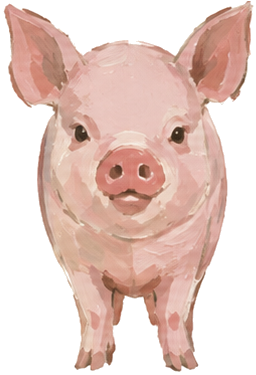
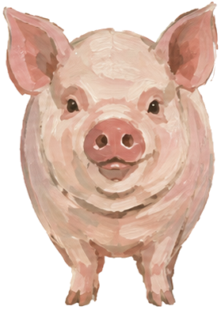

美
美玉15 分鐘前
今天跟社區的姊妹去公園健走，走了快五千步！天氣好舒服。
示意照片
基本功能不收費，不會偷偷扣款
資料只給您配對的家人看
提醒吃藥、陪聊天、一鍵視訊
登入後就能看到長輩今天過得好不好
還沒有帳號？
或讓家人用手機掃這個條碼
秀枝阿嬤您好，麻煩確認一下年齡跟居住的地方，這樣才能繼續使用喔！
請在家屬的手機上開啟「新增監控設備」，把畫面上的 6 位數號碼輸入到下方。
兒子
女兒
ID：M3T8 想加您為好友
ID：K7Q2
子女可以看到您的位置與移動路線
中央氣象署表示，下週三進入寒露節氣，各地早晚氣溫明顯下降，白天與夜間溫差可能超過 8 度。
醫師提醒，長輩血管對溫度變化較敏感，清晨出門運動前可先在室內暖身，並多帶一件薄外套，洗澡水溫也不宜過高。
今天跟社區的姊妹去公園健走，走了快五千步！天氣好舒服。
孫子幫我裝了這個 App，以後可以常常跟大家聊天了。
已經到底囉
把這組號碼唸給朋友聽，或讓朋友掃描上面的條碼
把朋友的 Uban 條碼對準框框
輸入朋友的 4 碼 ID
ID：M3T8
距離【重陽節】還有 17 天
這支手機需要多開兩個設定，家人打來時，電話畫面才能在鎖住螢幕時跳出來。
鎖住時也能看到來電
讓來電畫面可以自己跳出
點上面的「加好友」開始交朋友吧
請檢查網路後再試一次
正在呼叫家人
按下面的按鈕打給家人
好友都看得到這則貼文
好厲害！下次約我一起去
媽，記得多喝水喔
阿嬤，下午有點熱，記得喝杯水、休息一下喔！

您的家人正在呼叫您！

福氣小豬變得更有精神了
拿去餵小豬吧